[필기] 데이터베이스 구축
NOTE
정보처리기사 필기 — 데이터베이스 설계, 정규화, SQL, 트랜잭션 등 데이터베이스 구축 과목 핵심 정리.
📌 개념
Chapter 3. 데이터베이스 구축
- 데이터베이스 설계
-
데이터베이스 설계 시 고려사항
- 무결성, 일관성, 회복, 보안, 효율성, 데이터베이스 확장
-
데이터베이스 설계 순서
- 요구 조건 분석 : 요구 조건 명세서 작성
- 개념적 설계 : 독립적인 개념 스키마 모델링, 트랜잭션 모델링
- 논리적 설계 : 목표 DBMS에 맞는 논리스키마 설계
- 물리적 설계 ; 목표 DBMS에 맞는 물리적 구조의 데이터로 변환
- 구현 : 목표 DBMS의 DDL로 데이터베이스 생성, 트랜잭션 작성


-
- 데이터 모델
- 데이터 모델의 구성 요소
- 개체: 데이터베이스에 표현하려는 것으로 사람이 생각하는 개념이나 정보 단위 같은 현실 세계의 대상체
- 속성 : 데이터의 가장 작은 논리적 단위로서 파일 구조상의 데이터 항목 또는 데이터 필드에 해당
- 관계 : 개체 간의 관계 또는 속성 간의 논리적인 연결을 의미
- 개념적 데이터 모델
- 현실 세계에 대한 인간의 이해를 돕기 위해 현실 세계에 대한 인식을 추상적 개념으로 표현하는 과정
- 논리적 데이터 모델
- 개념적 모델링 과정에서 얻은 개념적 구조를 컴퓨터가 이해하고 처리할 수 있는 컴퓨터 세계의 환경에 맞도록 변환하는 과정
- 단순히 데이터 모델이라고 하면 논리적 데이터 모델을 의미
- 데이터 모델에 표시할 요소
- 구조 : 논리적인 개체 타입들 간의 관계, 데이터 구조 및 정적 성질을 표현
- 연산 : 실제 데이터를 처리하는 작업에 대한 명세로, 조작하는 기본 도구
- 제약 조건 : DB에 저장될 수 있는 실제 데이터의 논리적인 제약 조건
- 데이터 모델의 구성 요소
- 개체
- 개체의 정의 및 특징
- 실세계에 독립적으로 존재하는 유형, 무형의 정보로 서로 연관된 몇 개의 속성으로 구성됨
- 데이터베이스에 표현하려는 것으로 사람이 생각하는 개념이나 정보 단위 같은 현실 세계에 대상체
- 독립적으로 존재하거나 그 자체로서도 구별 가능
- 유일한 식별자에 의해 식별 가능
- 다른 개체와 하나 이상의 관계가 있음
- 개체 선정 방법
- 실제 업무를 담당하고 있는 담당자와 인터뷰를 함
- 실제 업무에 사용되고 있는 장부와 전표를 이용
- 자료 흐름도를 통해 업무 분석을 수행했을 경우 자료 흐름도의 자료 저장소를 이용함
- BPR(Business Process Reengineering , 업무 프로세스 재설계)에 의해 업무를 재정의한 경우 관련 개체를 찾음
- 개체명 지정 방법
- 일반적으로 해당 업무에서 사용하는 용어
- 약어 사용은 되도록 제한
- 가능한 단수 명사 사용
- 모든 개체명은 유일해야함
- 개체의 정의 및 특징
- 속성
-
속성의 정의 및 특징
- 데이터베이스를 구성하는 가장 작은 논리적 단위
- 파일 구조상의 데이터 항목 또는 데이터 필드
- 개체를 구성하는 항목 및 개체의 특성을 기술
- 속성의 수를 디그리(degree) 또는 차수라고 함
cf) 튜플의 수 : 카디널리티
-
속성의 특성에 따른 분류
- 기본 속성 : 업무 분석을 통해 정의한 속성
- 설계 속성 ; 원래 업무상 존재하지 않고 설계 과정에서 도출해낸 속성
- 파생 속성 : 다른 속성으로부터 영향을 받아 발생하는 속성
-
개체 구성 방식에 따른 분류
- 기본 키 속성 : 개체를 식별할 수 있는 속성
- 외래 키 속성 : 다른 개체와의 관계에서 포함된 속성
- 일반 속성 : 개체에 포함되어 있고 기본 키, 외래 키에 포함되지 않은 속성
-
속성명 지정 원칙
- 해당 업무에서 사용하는 용어 지정
- 서술형으로 지정하지 않음
- 가급적 약어의 사용은 제한
- 개체명은 속성명으로 사용할 수 없음
- 개체에서 유일하게 식별 가능하도록 지정
-
- 관계
-
관계의 형태

-
관계의 종류
- 종속 관계
- 중복 관계
- 재귀 관계
- 배타 관계
-
-
식별자
- 하나의 개체 내에서 각각의 인스턴스를 유일하게 구분할 수 있는 구분자
- 모든 개체는 한 개 이상의 식별자를 반드시 가져야 함

- E-R(개체 - 관계) 모델
-
개요
- 개념적 데이터 모델의 가장 대표적인 것
- 데이터를 개체, 속성, 관계로 묘사
- 특정 DBMS를 고려한 것은 아님
- E-R 다이어그램으로 1:1, 1:N, M:N 등의 관계 유형을 제한 없이 나타냄
-
피터 첸 표기법

-
정보 공학 표기법

- 실선은 1개를 의미, 까마귀 발은 N개를 의미
- 원형 표시는 선택적의미로서, 관계가 있을 수도, 없을 수도 있다는 것
-
버커 표기법

-
- 관계형 데이터 모델
-
개요
- 2차원적인 표를 이용해 데이터 상호 관계를 정의하는 DB구조
- 기본 키와 이를 참조하는 외래 키로 데이터 간의 관계를 표현
- 계층 모델과 망 모델의 복잡한 구조를 단순화시킨 모델
- 관계형 모델의 대표적인 언어는 SQL이고 1:1, 1:N, N:M 관계를 자유롭게 표현
-
관계형 데이터 모델의 구성

-
- 관계형 데이터베이스의 구조
-
관계형 데이터베이스의 관계 구조

-
튜플, 행 , 레코드
- 속성의 모임으로 구성됨
- 파일 구조상 레코드(실제 데이터)와 같은의미
- 튜플의 수 = 카디널리티 또는 기수, 대응수
-
속성, 열, 필드
- 데이터베이스를 구성하는 가장 작은 논리적 단위
- 파일 구조상의 데이터 항목 또는 데이터 필드에 해당
- 개체의 특성을 기술
- 속성의 수 = degree(차수)
-
도메인
- 하나의 속성이 가질 수 있는 같은 타입 원자값들의 집합
ex) 성별 속성의 도메인은 ‘남’,’여’로 그 외의 값은 입력될 수 없음(일반적)
-
-
릴레이션의 특징
-
한 릴레이션에 포함된 튜플(행) 사이에는 순서가 없음
-
한 릴레이션에 포함된 튜플(행)들은 모두 상이함
-
릴레이션 스키마를 구성하는 애트리뷰트(열) 사이에는 순서가 없음
-
각 애트리뷰트는 식별을 위해 릴레이션 내에서 유일한 이름을 가짐
-
애트리뷰트는 논리적으로 더이상 쪼갤 수 없는 원자값으로 저장함
-
정리
- 튜플은 서로 상이한 값을 갖고, 순서가 없다
- 애트리뷰트는 원자 값을 가지고, 순서가 중요하지 않으며, 유일한 이름을 가짐
-
-
- 키
- 데이터베이스에서 튜플들을 서로 구분할 수 있는 기준이 되는 속성
-
후보키
-
튜플을 유일하게 식별하기 위해 사용하는 속성들의 부분집합, 즉 기본키로 사용할 수 있는 속성들, 모든 릴레이션에는 반드시 하나 이상의 후보키가 존재
-
릴레이션에 있는 모든 튜플에 대해 유일성과 최소성을 만족시켜야함
-
유일성 : 하나의 키 값으로 하나의 튜플만을 유일하게 식별 가능
-
최소성 : 모든 레코드들을 유일하게 식별하는데 꼭 필요한 속성으로만 구성
-
-
기본키
- 후보키 중에서 특별히 선정된 주키로, 중복된 값과 NULL값을 가질 수 없음
- 후보키의 성질인 유일성과 최소성을 가지며 튜플을 식별하기 위해 반드시 필요한 키
-
대체키
- 후보키가 둘 이상일 때 기본키를 제외한 나머지 후보키를 의미
-
슈퍼키
- 한 릴레이션 내에 있는 속성들의 집합으로 구성된 키
- 모든 튜플에 대해 유일성은 만족시키지만, 최소성은 만족시키지 못함
-
외래키
- 다른 릴레이션의 기본키를 참조하는 속성 또는 속성들의 집합
- 다른 릴레이션의 기본키와 대응되 릴레이션 간의 참조 관계를 표현
- 무결성
- 데이터베이스에 저장된 데이터 값과 그것이 표현하는 현실 세계의 실제 값이 일치하는 정확성을 의미
-
개체 무결성
- 테이블의 기본키를 구성하는 어떤 속성(Attribute)도 널(NULL)값이나 중복값을 가질 수 없음
- 기본키의 속성 값이 널(NULL)값이 아닌 원자 값을 갖는 성질
-
도메인 무결성
- 릴레이션 내의 튜플들이 각 속성(Attribute)의 도메인에 지정된 값 만을 가져야함
-
참조 무결성
- 외래키 값은 NULL이거나 참조 릴레이션의 기본키 값과 동일해야함
- 릴레이션은 참조할 수 없는 외래키 값을 가질 수 없다는 규정
-
사용자 정의 무결성
- 속성 값들이 사용자가 정의한 제약 조건에 만족해야함
-
데이터 무결성 강화
- 애플리케이션 : 데이터 생성, 수정, 삭제 시 무결성 조건을 검증하는 코드를 데이터 조작하는 프로그램 내에 추가
- 데이터베이스 트리거 : 트리거 이벤트에 무결성 조건을 실행하는 절차형SQL을 추가
- 제약조건 : 데이터베이스에 제약 조건을 설정해 무결성을 유지
- 관계대수 및 관계 해석
-
관계대수
-
관계형 데이터베이스에서 원하는 정보와 그 정보를 검색하기 위해서 어떻게 유도하는가를 기술하는 절차적인 언어
-
순수관계 연산자


-
일반집합 연산자

-
-
관계해석
- 수학에 기반을 두고 관계 데이터베이스를 위해 제안
- 원하는 정보가 무엇이라는 것만 정의하는 비절자적특성
- 튜플 관계해석, 도메인 관계해석
- 관계대수로 표현한 식은 관계해석으로 표현 가능

-
관계대수와 관계해석 비교
-
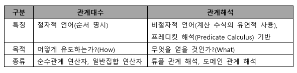
- 정규화 , 반정규화
- 하나의 종속성이 하나의 릴레이션에 표현될 수 있도록 분해해가는 과정
- 데이터베이스의 논리적 설계 단계에서 수행
-
정규화의 목적
- 데이터 구조의 안정성 및 무결성 유지
- 어떠한 릴레이션이라도 데이터베이스 내에서 표현 가능하게 만듦
- 효과적인 검색 알고리즘 생성 가능
- 데이터 중복을 배제해 이상의 발생 방지
- 데이터 삽입시 릴레이션을 재구성할 필요성을 줄임
-
이상의 개념 및 종류
-
정규화를 거치지 않아 데이터베이스 내에 데이터들이 불필요하게 중복
-
삽입 이상 : 의도와 상관없이 원하지 않은 값들도 함께 사입
-
삭제 이상 : 의도와는 상관없는 값들도 함께 삭제
-
갱신 이상 : 일부 튜플의 정보만 갱신됨
-
-
정규화의 원칙
- 정보의 무손실, 분리의 원칙, 데이터의 중복성 감소
-
정규화 과정
정규형 설명 1NF(제1정규형) 릴레이션에 속한 모든 도메인이 원자값만으로 되어 있는 정규형 2NF(제2정규형) 릴레시션 R이 1NF고, 기본키가 아닌 모든 속성이 기본키에 대해 완전 함수적 종속을 만족하는, 부분적 함수 종속을 제거한 정규형 3NF(제3정규형) 릴레이션 R이 2NF고, 기본키가아닌 모든 속성이 기본키에 대해 이행적 함수 종속관계를 만족하지 않는 정규형 : A→ B이고 B→C 일때 A→C를 만족하는 관계 (이행규칙) BCNF(Boyce-Codd 정규형) 릴레이션 R에서 모든 결정자가 후보키인 정규형, 모든 BCNF가 종속성을 보존하는 것은 아님 (강한 제3정규형, 보이스/코드 정규형) 4NF(제4정규형) 릴레이션 R에 다치 종속이 성립하는 경우 R의 모든 속성이 A에 함수적 종속 관계를 만족하는 정규형 5NF(제5정규형) 릴레이션 R의 모든 조인 종속이 R의 후보키를 통해서만 성립되는 정규형 -
반정규화 개념
- 시스템 성능향상, 정규화된 데이터 모델을 통합, 중복, 분리하는 과정으로 의도적으로 정규화 원칙을 위배하는 행위
- 데이터의 일관성 및 정합성이 저하될 우려가 존재
-
반정규화 방법
- 테이블 통합 : 1:1 관계 | 1:N 관계 | 슈퍼타입/서브타입 {테이블 통합}
- 테이블 분할 : 수평 분할, 수직 분할 → 기본키의 유일성관리가 어려워짐
- 중복 테이블 추가 : 집계 테이블 | 진행 테이블 | 특정 부분만을 포함하는 테이블
- 중복 속성 추가 : 자주 사용하는 속성을 하나 더 추가하는 것
- 시스템 카탈로그
- 시스템 카탈로그의 의미
- 모든 데이터객체에 대한 정의나 명세에 관한 정보를 유지 관리하는 시스템 테이블
- 좁은 의미로는 카탈로그를 데이터 사전이라고 함
- 시스템 카탈로그에 저장된 정보를 메타 데이터라고 함
- 카탈로그의 특징
- SQL을 이용해 내용을 검색할 수 있음
- Insert, Delete, Update문으로 카탈로그를 갱신할 수 없음
- DBMS에 따라 상이한 구조를 갖음
- 카탈로그는 DBMS가 스스로 생성하고 유지함
- 사용자가 SQL문을 실행시켜 변화를 주면 시스템이 자동으로 갱신함
- 데이터 디렉터리
- 데이터 사전에 수록된 데이터를 실제로 접근하는 데 필요한 정보를 관리 유지하는 시스템
- 시스템만 접근할 수 있음
- 시스템 카탈로그의 의미
- 데이터베이스 저장공간 설계
-
테이블
- 행, 열로 구성
- 논리적 설계 단계의 개체에 대응하는 객체
-
클러스터 인덱스 테이블
- 기본키나 인덱스키의 순서에 따라 데이터가 저장됨
- 일반적인 인덱스를 사용하는 테이블에 비해 접근경로가 단축됨
-
파티셩닝 테이블
- 대용량의 테이블을 작은 논리적 단위인 파티션으로 나눈 테이블
- 파티션 키를 잘못 구성하면 성능 저하 등의 역효과
-
레인지 파티셔닝 : 지정한 열의 값을 기준으로 분할
-
해시 파티셔닝 : 해시함수에 따라 데이터 분할
-
리스트 파티셔닝 : 미리 정해진 그룹핑 기준에 따라 분할
-
컴포지트 파티셔닝 : 레인지 파티셔닝 이후 해시함수를 적용
-
파티션의 장점
- 성능 향상, 가용성 향상, 백업 가능, 경합 감소
-
-
외부 테이블
- 데이터베이스에서 일반 테이블처럼 이용할 수 있는 외부 파일
데이터 웨어하우스, ETL
-
임시 테이블
- 트랜잭션이나 세션별로 데이터를 저장하고 처리할 수 있는 테이블
- 임시테이블에 저장된 데이터는 트랜잭션이 종료되면 삭제됨
- 절차적인 처리를 위해 임시로 사용하는 테이블
-
칼럼
- 가변 길이 데이터 타입 : 예상되는 최대 길이로 정의
- 고정 길이 데이터 타입 : 최소 길이로 지정
- 소수점 이하 자릿수 : 소수점 이하 자릿수는 반올림되어 저장
- 고정 길이 칼럼이고 NOT NULL인 칼럼: 앞 쪽
- 가변 길이 컬럼, NULL 값이 많을 것으로 예상되는 컬럼 : 뒤 쪽
-
테이블스페이스
-
테이블이 저장되는 논리적인 영역
-
테이블을 저장하면 논리적으로는 테이블스페이스에 저장되고, 물리적으로는 해당 테이블스페이스와 연관된 데이터 파일에 저장됨
-
테이블스페이스 설계 시 고려사항
- 업무별로 구분해 지정하고, 테이블과 인덱스는 분리해 저장함
- 대용량 테이블은 하나의 테이블스페이스에 독립적으로 저장함
- LOB 타입의 데이터는 독립적인 공간으로 지정함
-
-
- 트랜잭션
-
트랜잭션의 정의
-
데이터베이스의 상태를 변환시키는 하나의 논리적 기능을 수행하기 위한 작업의 단위
-
한꺼번에 모두 수행되어야 할 일련의 연산들
- COMMIT : 트랜잭션 처리가 정상적으로 종료되어 수행한 변경 내용을 DB에 반영하는 명령어
- ROLLBACK : 트랜잭션 처리가 비정상으로 종료되어 DB의 일관성이 깨졌을 때 트랜잭션이 행한 모든 변경 작업을 취소하고 이전 상태로 되돌리는 연산
- SAVEPOINT(=CHECKPOINT): 트랜잭션 내에서 ROLLBACK 할 위치인 저장점을 지정하는 명령어, 여러개의 SAVEPOINT 지정 가능
*COMMIT 과 ROLLBACK 명령어에 의해 보장 받는 트랜잭션 특징 = 원자성
-
-
트랜잭션의 특성
원리 특징 원자성 트랜잭션 연산을 데이터베이스 모두에 반영되든지 아니면 전혀 반영되지 않아야함 일관성 트랜잭션이 실행을 성공적으로 완료할 시 일관성 있는 데이터베이스 상태를 유지 독립성 둘 이상 트랜잭션 동시 실행 시 한 개의 트랜잭션만 접근이 가능하여 간섭 불가 영속성 성공적으로 완료된 트랜잭션 결과는 영구적으로 반영됨 -
CRUD 매트릭스
- Create, Read, Update, Delete, ‘C > D > U > R 의 우선순위 적용
- 테이블, 프로세스에 C,R,U,D가 모두 없는 경우
- 테이블에 C 또는 R이 없는 경우 (프로세스는 하나만 있어도 돌아감)
-
- 인덱스
- 인덱스 개념 및 선정기준, 고려사항
-
데이터 레코드를 빠르게 접근하기 위해 <키 값, 포인터> 쌍으로 구성된 데이터 구조
-
인덱스 칼럼 선정
- 인덱스 컬럼의 분포도가 10~15% 이내인 “컬럼”
- 가능한 한 수정이 빈번하지 않는 “컬럼”
- ORDER BY, GROUP BY, UNION이 빈번한 “컬럼”
- 분포도가 좋은 컬럼은 단독 인덱스로 생성
- 인덱스들이 자주 조합되어 사용되는 컬럼은 결합 인덱스로 생성
-
설계 시 고려사항
- 새로 추가되는 인덱스는 기존 엑세스 경로에 영향을 미칠 수 있음
- 지나치게 많은 인덱스는 오버헤드 발생
- 넓은 범위 인덱스 처리 시 오히려 전체 처리보다 많은 오버헤드를 발생시킴
- 인덱스만의 추가적인 저장 공간이 필요
- 인덱스와 테이블 데이터의 저장 공간이 분리되도록 설계
-
- 인덱스 종류
- 클러스터 인덱스 / 넌 클러스터 인덱스
- 트리 기반 인덱스
- 비트맵 인덱스
- 함수 기반 인덱스
- 비트맵 조인 인덱스
- 도메인 인덱스 : 개발자가 필요한 인덱스를 직접 만들어 사용
- 인덱스 개념 및 선정기준, 고려사항
-
뷰
- 뷰의 개요 및 특징
- 기본 테이블로부터 유도된, 이름을 가지는 가상 테이블로 기본 테이블과 같은 형태의 구조를 사용하며, 조작도 기본 테이블과 거의 같음
- 가상 테이블이기 때문에 물리적 구현 x → 저장장치 내에 논리적으로 존재
- 정의된 뷰로 다른 뷰를 정의할 수 있음
- 뷰가 정의된 기본 테이블이나 뷰를 삭제하면 그 테이블이나 뷰를 기초로 정의된 다른 뷰도 자동으로 삭제됨
속성 설명 REPLACE 뷰가 이미 존재하는 경우 재생성 FORCE 본 테이블의 존재 여부 관계 없이 뷰 생성 NOFORCE 기본 테이블이 존재할 때만 뷰 생성 WITH CHECK OPTION 서브 쿼리 내의 조건을 만족하는 행만 변경 WITH READ ONLY 데이터 조작어(DML) 작업 불가 - 뷰의 장, 단점
- 장점
- 논리적 데이터 독립성 제공
- 접근 제어를 통한 자동 보안 제공
- 사용자 데이터 관리 용이
- 단점
- 독립적인 인덱스를 가질 수 없음
- 뷰의 정의를 ALTER로 변경할 수 없음 → DROP하고 새로 CREATE해야 함
- 뷰로 구성된 내용에 대한 삽입, 삭제, 갱신, 연산에 제약이 따름
- 장점
- 클러스터
- 클러스터의 개요 및 특징
- 데이터 저장 시 데이터 액세스 효율을 향상시키기 위해 동일한 성격의 데이터를 동일한 데이터 블록에 저장하는 물리적 저장 방법
- 인덱스의 단점을 해결한 기법 → 분포도가 넓을수록 오히려 유리함
- 분포도가 넓은 “테이블”의 클러스터링은 저장 공간의 절약이 가능
- 대량의 범위를 자주 액세스 하는 경우 적용
- 인덱스를 사용한 처리 부담이 되는 넓은 분포도에 활용
- 클러스터의 선정기준 및 고려사항
- 클러스터 테이블 선정
- 수정이 빈번하지 않는 “테이블”
- ORDER BY, GROUP BY, UNION이 빈번한 “테이블”
- 처리 범위가 넓어 문제가 발생하는 경우 단일 테이블 클러스터링 사용
- 조인이 많아 문제가 발생되는 경우는 다중 테이블 클러스터링 사용
- 설계 시 고려사항
- 클러스터링 된 테이블은 조회 속도를 향상시켜주지만 입력, 수정, 삭제 시 성능이 저하됨
- 대용량을 처리하는 트랜잭션은 전체 테이블을 스캔하는 일이 자주 발생하므로 클러스터링을 하지 않는 것이 좋음
- 클러스터링 된 테이블에 클러스터 인덱스를 생성하면 접근 성능이 향상됨
- 클러스터 테이블 선정
- 클러스터의 개요 및 특징
- 분산 데이터베이스 설계
-
분산 데이터베이스 정의
- 논리적으로는 하나의 시스템에 속하지만 물리적으로는 네트워크를 통해 연결된 여러 개의 컴퓨터 사이트에 분산돼 있는 데이터베이스
-
분산 데이터베이스의 구성 요소
구성요소 설명 분산처리기 자체적으로 처리 능력을 가지며, 지리적으로 분산되어 있는 컴퓨터 시스템 분산 데이터베이스 지리적으로 분산되어 있는 데이터 베이스. 해당 지역의 특성에 맞게 구성된 데이터 베이스 통신 네트워크 분산 처리기들을 통신망으로 연결해 논리적으로 하나의 시스템처럼 작동할 수 있도록 하는 통신 네트워크 -
분산 데이터베이스의 목표
목표 설명 위치 투명성 데이터베이스의 실제 위치를 알 필요 없이 단지 데이터베이스의 논리적인 명칭만으로 액세스 할 수 있음 중복 투명성 동일 데이터가 여러 곳에 중복되어 있더라도 사용자는 마치 하나의 데이터만 존재하는 것처럼 사용하고, 시스템은 자동으로 여러 자료에 대한 작업을 수행 병행 투명성 다수의 트랜잭션들이 동시에 실현 되더라도 그 트랜잭션의 결과는 영향을 받지 않음 분할 투명성 하나의 논리적 릴레이션이 여러 단편으로 분할되어 각 단편의 사본이 여러 시스템에 저장되어 있음을 인식할 필요가 없음 장애 투명성 트랜잭션 ,DBMS, 네트워크, 컴퓨터 장애가 발생해도 트랜잭션을 정확하게 처리하고 데이터 무결성을 보장함 -
분산 데이터베이스의 장, 단점
장점 단점 지역 자치성이 높음 DBMS가 수행할 기능이 복잡 자료의 공유성 향상 데이터베이스 설계가 어려움 분산 제어 가능 소프트웨어 개발 비용 증가 시스템 성능 향상 처리 비용 증가 중앙컴퓨터의 장애가 전체 시스템에 영향 X 잠재적 오류 증가( 사이트 간의 오류 발생률 높음) → 보안의 어려움 효용성과 융통성이 높음 신뢰성 및 가용성이 높음 점진적 시스템 용량 확장 용이 -
분산 데이터베이스 설계
-
애플리케이션이나 사용자가 분산되어 저장된 데이터에 접근하게 하는 것을 목적
-
분산 설계 방법
- 테이블 위치 분산 : 테이블을 각기 다른 서버에 분산시켜 배치하는 방법
- 분할 : 테이블의 데이터를 분할하여 분산시키는 것
- 할당 : 동일한 분할을 여러 개의 서버에 생성하는 방법 (중복이 없는 할당, 있는 할당)
-
-
- 데이터베이스 이중화 / 서버 클러스터링
-
데이터베이스 이중화
- 시스템 오류로 인한 데이터베이스 서비스 중단이나 물리적 손상 발생 시 이를 복구하기 위해 동일한 데이터베이스를 복제해 관리하는 것
-
데이터베이스 이중화 분류
기법 설명 Eager기법 트랜잭션 수행 중 데이터변경이 발생하면 이중화된 모든 데이터베이스에 즉시 전달해 변경내용이 즉시 적용 되도록 하는 기법 LAZY 기법 트랜잭션 수행이 종료되면 변경 사실을 새로운 트랜잭션에 작성해 각 데이터베이스에 전달되는 기법 -
데이터베이스 이중화 구성 방법
- 활동-대기 : 한 DB가 활동 상태로 서비스하고 있으면, 다른 DB는 대기하고 장애 발생시 대신 서비스 실행
- 활동 - 활동 : 두개의 DB가 서로 다른 서비스를 제공하다가 둘 중 한쪽에 DB문제가 발생하면 나머지 다른 DB가 서비스를 제공
-
서버 클러스터링
- 두 대 이상의 서버를 하나의 서버처럼 운영하는 기술
- 고가용성 클러스터링 : 하나의 서버에 장애 발생 (다른 서버가 대신 처리)
- 병렬 처리 클러스터링 : 하나의 작업을 여러 개의 서버에 분산해 처리
-
- 데이터베이스 보안 / 스토리지
-
데이터베이스 보안의 개요
- 데이터베이스 일부분 또는 전체에 대해서 권한이 없는 사용자가 액세스 하는 것을 금지하기 위해 사용되는 기술
- 데이터베이스 사용자들은 일반적으로 서로 다른 객체에 대해 다른 접근 권리 또는 권한을 가짐
-
암호화
- 암호화 과정
- 암호화 되지 않은 평문을 정보 보호를 위해 암호문으로 바꾸는 과정
- 복호화 과정
- 암호문을 원래의 평문으로 바꾸는 과정
- 암호화 과정
-
암호화 방식
- 개인키 암호 방식 ( 비밀키 암호 방식, 대칭키) : 동일한 키로 데이터 암호화 복호화
- 종류 : DES, AES, SEED, ARIA
- 공개키 암호방식 (비대칭키) : 데이터 암호화(공개키 사용) , 데이터 복호화 (비밀키)
- 종류 : RSA, DIFFIE HELLMAN 알고리즘
- 개인키 암호 방식 ( 비밀키 암호 방식, 대칭키) : 동일한 키로 데이터 암호화 복호화
-
접근 통제
- 데이터가 저장된 객체와 이를 사요하려는 주체 사이의 정보 흐름을 제한 하는 것
- 접근 통제 3요소 : 접근통제 정책, 접근통제 보안 모델, 접근통제 매커니즘
- 임의 접근 통제
- 데이터에 접근하는 사용자의 신원에 따라 접근 권한 부여
- 강제 접근 통제
- 주체와 객체의 등급을 비교해 접근 권한 부여
- 임의 접근 통제
-
접근 통제 정책
정책 설명 신분 기반 정책(DAC) 주체나 그룹의 신분에 근거해 객체의 접근을 제한하는 방법 규칙 기반 정책 (MAC) 주체가 갖는 권한에 근거해 객체의 접근을 제한하는 방법 역할 기반 정책(RBAC) 주체가 맡은 역할에 근거해 객체의 접근을 제한하는 방법 -
접근 통제 매커니즘
- 접근 통제 목록(ACL) : 객체를 기준으로 특정 객체에 대해 어떤 주체가 어떤 행위를 할 수 있는지를 기록한 목록
- 능력 리스트(CL) : 주체를 기준으로 주체에게 허가된 자원 및 권한을 기록한 목록
- 보안 등급(Security Label), 패스워드, 암호화
-
접근통제 보안 모델
- 기밀성 모델 : 군사적인 목적으로 개발된 최초의 수학적 모델, 기밀성 보장 최우선
- 벨라파듈라 모델 : No Read Up(기밀성) , No Write Down
- 무결성 모델 : 불법적인 정보 변경을 방지하기 위해 무결성을 기반으로 개발된 모델
- 비바 모델 : No Read Down, No Write Up(무결성)
- 접근 통제 모델 : 접근통제 매커니즘을 보안 모델로 발전시킨 것
- 접근 통제 행렬 : 행=주체, 열=객체
- 기밀성 모델 : 군사적인 목적으로 개발된 최초의 수학적 모델, 기밀성 보장 최우선
-
데이터베이스 백업 종류
- 로그파일 : 데이터베이스의 상태변화를 시간의 흐름에 따라 모두 기록한 파일
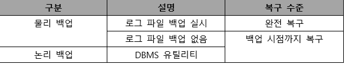
-
스토리지
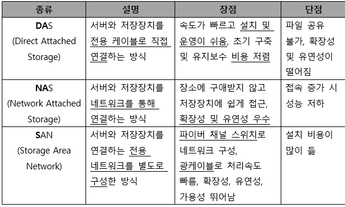
-
- 논리 데이터 모델의 물리 데이터 모델 변환 및 품질 검토
-
일반적인 변환 절차
- 단위 개체를 테이블로 변환 → 속성을 칼럼으로 변환 → UID를 기본 키로 변환 → 관계를 외래키로 변환 → 컬럼 유형과 길이 정의 → 반정규화 수행
-
슈퍼타입/서브타입을 테이블로 변환
- 슈퍼타입 기준 테이블 변환 : 서브타입을 슈퍼타입에 통합해 하나의 테이블로 만드는 것
- 서브타입 기준 테이블 변환 : 슈퍼타입 속성들을 각각의 서브타입에 추가해 서브타입들을 개별적인 테이블로 만드는 것
- 개별타입 기준 테이블 변환 : 슈퍼타입과 서브타입들을 각각의 개별적인 테이블로 변환하는 것
-
물리 데이터 모델 품질 기준
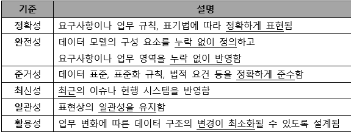
-
- SQL 활용 (매우 중요)
-
SQL의 분류
-
DDL(데이터 정의어)
-
DOMAIN(도메인), SCHEMA(스키마), TABLE(테이블), VIEW(뷰), INDEX(인덱스)를 정의하거나 변경 또는 삭제할 떄 사용하는 언어
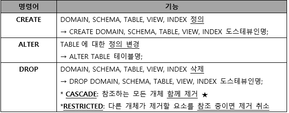
-
-
DML(데이터 조작어)
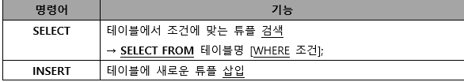
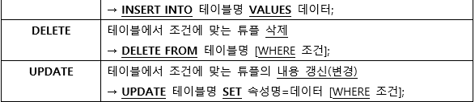
-
DCL(데이터 제어어)
- 데이터의 무결성, 보안, 회복, 병행수행 제어 등을 정의하는데 사용
- 데이터베이스 관리자(DBA)가 데이터 관리를 목적으로 사용
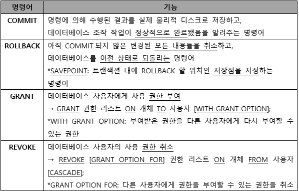
-
-
SELECT
- where 절 : 검색할 조건
- order by 절 : 정렬 (ASC :오름차순, DESC : 내림차순)
- group by 절 : 그룹화
- having 절 : group by와 함께 사용되며, 그룹에 대한 조건 지정 (DISTINCT : 중복 튜플 제거)
- 집계/ 그룹함수 : group by 절에 지정된 그룹별로 속성의 값을 집계할 함수를 기술함
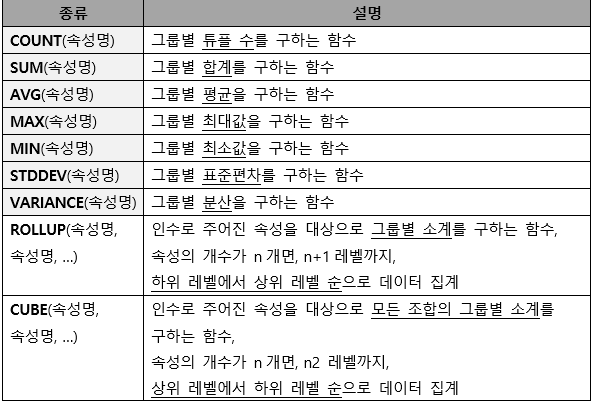
-
윈도우 함수 : group by 절을 이용하지 않고 속성의 값을 집계할 함수를 기술함
- 함수의 인수로 지정한 속성이 대상 레코드의 범위가 되는데, 이를 WINDOW라 함
partition by : 윈도우 함수가 적용될 범위로 사용할 속성 지정
- WINDOW 함수 OVER (PARTITION BY 속성 ORDER BY 속성) [AS 바꾸고 싶은 이름]
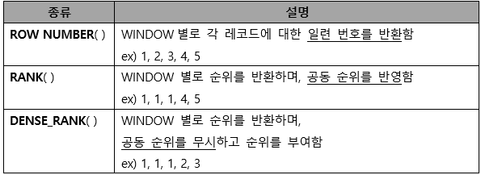
-
조인
- 결합을 의미
- 교집합 결과 (관계형 DB)
- 두 릴레이션으로부터 연관된 튜플을 결합해, 하나의 새로운 릴레이션을 반환
- 논리적 조인
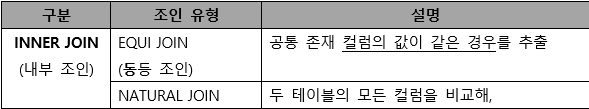
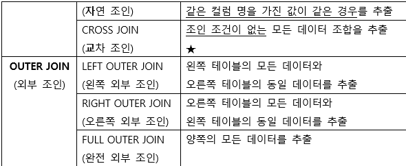
- 물리적 조인
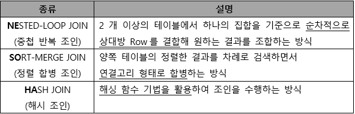
-
-
SQL 활용
-
절차형 SQL
- 연속적인 실행이나 분기, 반복 등의 제어가 가능한 SQL (ex_ C언어, JAVA 등)
- 연속적인 작업처리 적합
- BEGIN ~ END 형식으로 작성되는 블록 구조로 기능별 모듈화 가능
-
프로시저
- 미리 저장해 놓은 SQL 작업 수행 , 처리 결과는 한 개 이상의 값 또는 반환을 안함
- 시스템의 일일 마감 작업, 일괄 작업등에 주로 사용
- DECLEAR(필수) : 프로시저 명칭, 선언부(변수, 인수, 데이터 타입)
- BEGIN(필수) : 프로시저의 시작
- CONTROL : 조건문, 반복문 사용
- SQL : DML, DCL이 삽입 ( 데이터 관리를 위한 작업 수행 )
- EXCEPTION : BEGIN ~ END 구문 실행시 예외처리
- TRANSACTION : 수행된 데이터 작업들을 DB에 적용할지 말지 결정
- END(필수) : 프로시저의 종료를 의미
→ CREATE [OR REPLACE] PROCEDURE 프로시저명(파라미터) [지역변수 선언]
BEGIN
BODY
END
*OR REPLACE : 기존에 프로시저 이름이 이미 존재하는 경우 기존의 프로시저를 대체할 수있음
→ EXECUTE,EXEC, CALL 프로시저명 / DROP PROCEDURE 프로시저명
-
트리거
- 삽입, 갱신, 삭제 등의 이벤트가 발생할 떄마다 관련 작업을 자동 수행
- 데이터 변경 및 무결성 유지, 로그 메시지 출력
- DCL(데이터제어어)를 사용할 수 없음
- 트리거 오류 있을시, 트리거가 처리하는 데이터에도 영향을 미침
- DECLEAR(필수) : 트리거 명칭, 변수 및 상수, 데이터 타입을 정의하는 선언부
- EVENT(필수) : 트리거가 실행되는 조건을 명시
- BEGIN(필수) : 트리거 시작
- CONTROL : 조건문, 반복문 사용
- SQL : DML문이 삽입되어 데이터 관리를 위한 작업 수행
- EXCEPTION BEGIN : BEGIN ~ END 구문 실행시 예외처리
- END(필수) : 트리거 종료를 의미
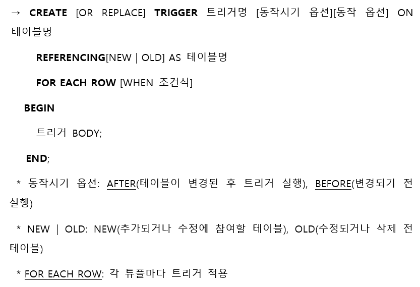
- DROP TRIGGER 트리거명; : 트리거 삭제
-
사용자 정의 함수
- 프로시저와 유사하게 SQL을 사용해 일련의 작업을 연속적으로 처리
- 종료 시 예약어 RETURN을 사용해 처리결과를 단일값으로 반환
- DML문(SELECT, INSERT, DELETE, UPDATE)의 호출에 의해 실행됨
- RETURN을 통해 값을 반환해, 출력(OUT) 파라미터가 없음
- INSERT, DELETE, UPDATE로 테이블 조작은 할 수 없고, SELECT로 조회만 가능
- 프로시저를 호출해 사용 불가능
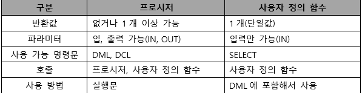
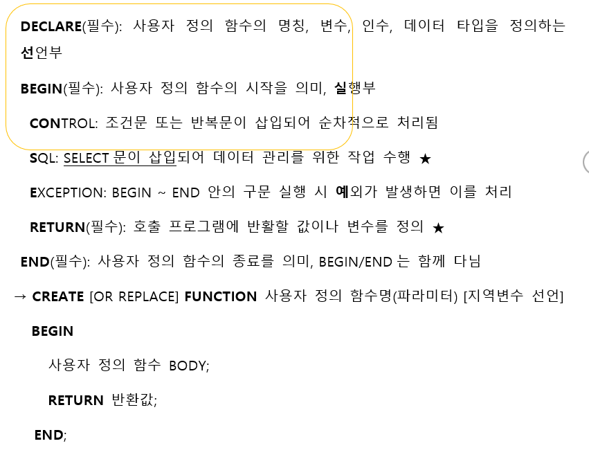
-
- DBMS 접속 기술
-
웹 응용 시스템의 구조
- 사용자 <> 웹서버 <> WAS <> DBMS
- 사용자가 웹서버에 접속
- 웹서버는 WAS에게 요청
- WAS는 트랜잭션 언어로 변환후 DBMS에 전달
- 데이터를 다시 웹서버로 전달 후 사용자에게 도달
- 사용자 <> 웹서버 <> WAS <> DBMS
-
DBMS 접속 기술
- JDBC : JAVA언어로 다양한 종류의 데이터베이스에 접속, 접속하려는 DBMS에 대한 드라이버가 필요
- ODBC : 데이터베이스에 접근하기 위한 표준 개방형 API로 개발 언어에 관계없이 사용 가능
-
정적 SQL vs 동적 SQL
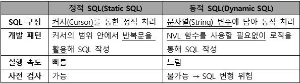
-
- ORM(Object-Relational Mapping)
-
ORM의 개요
- 객체와 관계형데이터베이스의 데이터를 연결하는 기술
- ORM으로 생성된 가상의 객체지향 데이터베이스는 프로그래밍 코드 또는 데이터베이스와 독립적이므로 재사용 및 유지보수 용이
- 직관적이고 간단하게 데이터 조작 가능
-
ORM 프레임워크
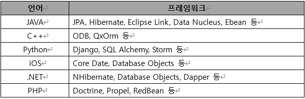
-
ORM의 한계
- 프레임워크가 자동으로 SQL을 작성
- 객체지향적인 사용 고려와 프로젝트가 크고 복잡해질수록 적용하기 어려워짐
- 기존의 회사는 ORM을 고려하지 않고 데이터베이스를 사용하고 있어서, ORM에 적합하게 변환하려면 많은 시간과 노력 필요
-
-
쿼리 성능 최적화
- 쿼리 성능 최적화하기 전, 성능 측정 도구인 APM을 사용
- 최적화 할 쿼리에 대해 옵티마이저가 수립한 실행 계획을 EXPLAIN 명령어를 통해 검토하고, SQL 코드와 인덱스 재구성
- 옵티마이저 : 작성된 SQL이 가장 효율적으로 수행되도록 최적의 경로를 찾아 주는 모듈.
- RBO(Rule Based Optimizer) vs CBO(Cost Based Optimizer)
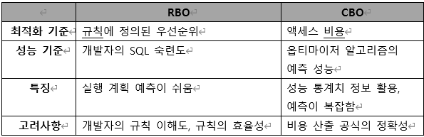
- SQL 코드 및 인덱스 재구성
- SQL 코드 재구성
- 서브 쿼리에 특정 데이터가 존재하는지 확인 할 때는 EXISTS 활용
- 실행 계획이 잘못되었다고 판단되는 경우 힌트를 활용
- 인덱스 재구성
- 인덱스 추가 및 변경은 해당 테이블을 참조하는 다른 SQL문에도 영향을 줄 수 있으므로 신중히 결정
- 단일 인덱스로 쓰기나 수정 없이 일기로만 사용되는 테이블의 경우 IOT 구성 고려
- SQL 코드 재구성
- 데이터 전환
-
데이터 전환의 정의
- 데이터를 추출하여 새로 개발할 곳에 운영이 가능하도록 변환 후 적재하는 과정
- ETL(Extraction, Transformation, Loading) : 추출, 변환, 적재 과정
- 데이터이행, 데이터 이관이라고도 함
-
데이터 전환 계획서
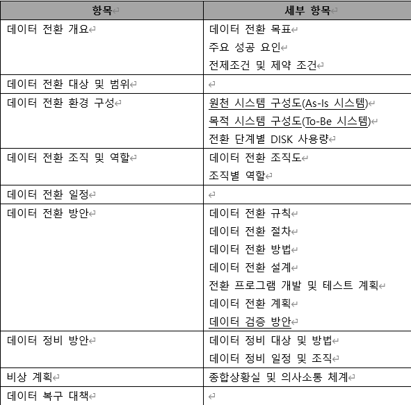
-
-
추가 정리, 수제비 및 기출문제
- Where 조건
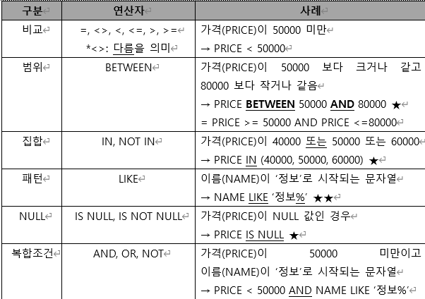
- LIKE와 같이 사용하는 와일드 문자
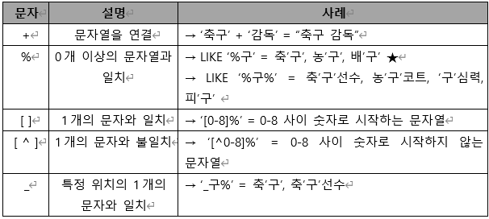
- 주석처리
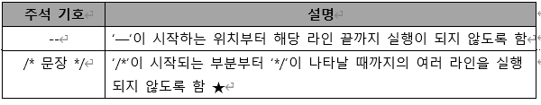
-
힌트의 사용
- SQL 문에 사전 정보를 줘서, SQL문 실행에 빠른 결과를 가져오는 효과를 만드는 문법
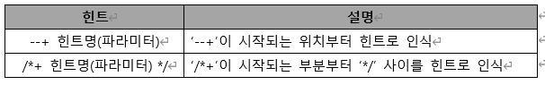
-
집합 연산자
- 테이블을 집합 개념으로 보고, 두 테이블 연산에 집합 연산자를 사용하는 방식
- 여러 질의 결과를 연결해 하나로 결합하는 방식을 사용
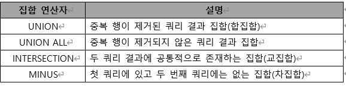
-
서브쿼리
- SQL문 안에 포함된 또 다른 SQL문
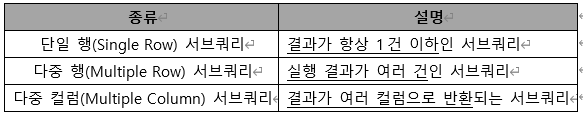
-
데이터 지역화
-
데이터베이스의 저장 데이터를 효율적으로 이용할 수 있도록 저장하는 방법
-
구역성라고도 함
-
데이터 지역화의 종류
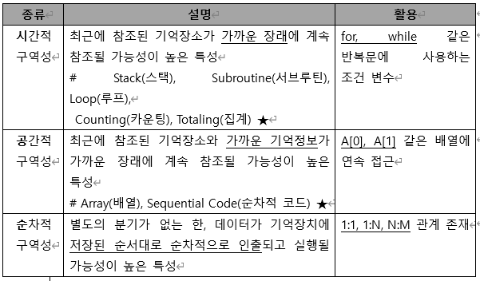
- 데이터 지역화를 활용한 관리 기법
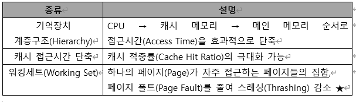
-
-
병행제어의 로킹 단위
-
한번에 한 명만 사용할 수 있게 잠그는(locking) 단위
-
로킹의 대상이 되는 객체의 크기를 로킹 단위라고함
-
데이터베이스, 파일, 레코드 등은 로킹 단위가 될 수 있음
-
한꺼번에 로킹할 수 있는 객체의 크기를 로킹단위라고함
-
로킹 단위가 작으면
- 로킹 오버헤드가 증가
- 데이터베이스 공유도가 증가함 (= 병행성 수준이 높아짐)
-
로킹 단위가 크면
- 로킹 오버헤드가 감소
- 데이터베이스 공유도가 감소함 (= 병행성 수준이 낮아짐)
-
-
데이터베이스 로그를 필요로하는 회복기법
-
지역 갱신 기법
- 트랜잭션이 부분 완료 상태에 이르기까지 발생한 모든 변경 내용을 로그 파일에만 저장, 데이터베이스에는 COMMIT이 발생할 때까지 저장 지연
- 트랜잭션이 실패할 경우 UNDO없이 로그 단순 폐기
-
즉시 갱신 기법
- 트랜잭션 수행 도중 데이터를 변경하면 변경 정보를 로그파일에 저장, 모든 변경 내용 즉시 데이터베이스 반영
- 로그 파일을 참조해 미완료된 변경에 대해 UNDO를 우선 실행, 완료된 변경에 대해 REDO 실행
(UNDO는 COMMIT된 지점이 없음)
-
기출문제
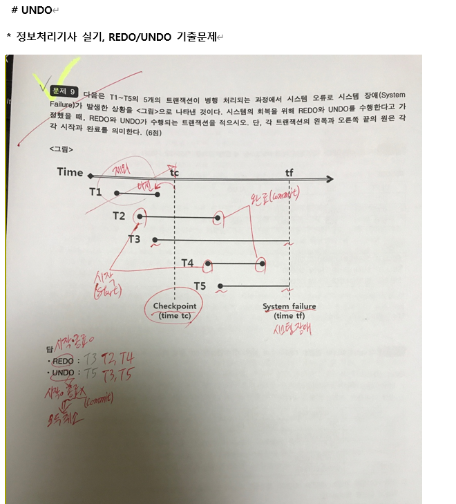
-
NOTE
위의 문제) 시스템 장애 → undo는 있음 (CheckPoint~ 시스템장애 사이 복구 필요) - 시스템 장애시까지 작업 중이던거는 UNDO로 해결 - CheckPoint에서 부터 시스템 장애 사이에 작업이 끝난경우 REDO로 복구
> [!NOTE]
REDO : 전 Check Point로 되돌림 UNDO : 작업했던 것들을 반대로 실행함으로써 복구 * 시스템 장애시 UNDO도 날아가기에 REDO 사용
시스템장애시) REDO → UNDO → 전 상태로 복구
> [!NOTE]
트랜잭션 : 데이터베이스에 적용 전, 연산 작업 집합의 단위 (가장 작은) → 일련의 연산 과정들을 지나고 데이터베이스에 COMMIT